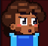
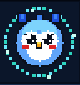

Hoverboard boreal
Deslize sobre a neve e flutue entre plataformas com sua prancha movida pela energia da aurora.
✦ UMA AVENTURA ACIMA DAS NUVENS
Plataforma 2D em pixel art
A aurora se apagou. Uma montanha espera. Descubra até onde a coragem pode te levar.
UM MUNDO DE GELO E LUZ
Em SNOW SKY, cada salto é uma escolha e cada pouso conta. Atravesse paisagens congeladas, domine o movimento da hoverboard boreal e siga o rastro de uma aurora que desapareceu.
02 / COMO JOGAR
Uma jornada que pede agilidade, timing e a coragem de saber quando desacelerar.
Deslize sobre a neve e flutue entre plataformas com sua prancha movida pela energia da aurora.
Encontre anéis luminosos pelo caminho e use-os para explorar novas possibilidades de movimento.
Alterne entre velocidade e pousos cuidadosos. Às vezes, frear é o salto mais corajoso.
03 / COMPANHEIROS DE JORNADA

Determinação sobre duas pernas e uma prancha flutuante. É ela quem decide trazer a aurora de volta.

Uma pequena luz no meio do frio. A nova parceira de Maya nesta jornada rumo ao Pico Estrelado.
✧ Maya e a hoverboard flutuam em um loop animado feito com CSS.
04 / A HISTÓRIA
SNOW SKY é um jogo de plataforma 2D em pixel art que acompanha Maya, uma jovem aventureira em uma jornada por uma montanha congelada utilizando uma misteriosa prancha flutuante, a hoverboard boreal. Há três invernos, a Aurora Boreal deixou de brigar na vila, mergulhando a região em um frio silencioso. Determinada a recuperar essa luz, Maya parte em direção ao Pico Estrelado para reacender os antigos Marcos Boreais. Ao longo do caminho, ela encontra Luma — uma pequena criatura de cristal que se torna sua parceira —, enfrenta correntes de ar e desafios no Corredor dos Ventos onde aprende que frear também exige coragem.
05 / INSPIRAÇÕES
FEITO COM CARINHO PELOS JOGOS INDIEEntre as grandes inspirações de SNOW SKY, está Celeste — uma referência em desafios de plataforma, precisão e jornadas que vão além do cume.
✧ SUA JORNADA COMEÇA AQUI